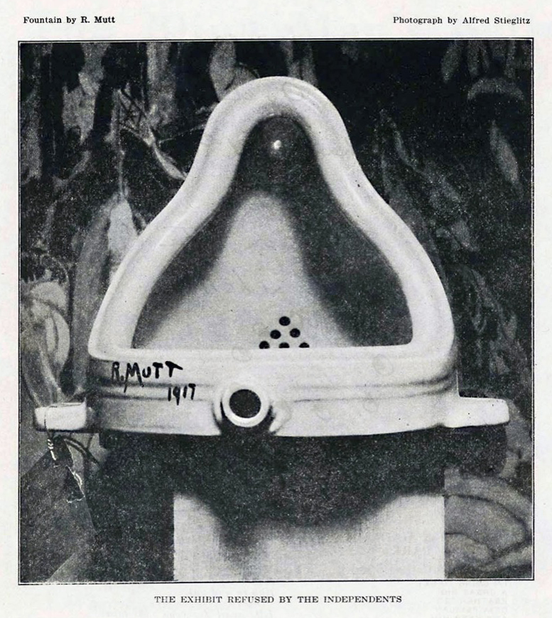

Is there such a thing as good or bad art?
One reason for this complication is based on how art is commonly seen as a way to express emotions in one's work rather than trying to make something pleasing to all.
‘It is not right to speculate on whether or not it’s good. To do so is rather uneducated. Art is innovation’[?]
Lees views on the distaste for declaring art as ‘bad’ is a popular view in the art world, as one person may dub a piece that could be made intentionally to challenge the current art tropes as a lazy or uninspired piece. This intentional roughness can be seen in the DADA (originally a french term for a hobby horse) movement from 1916 which gained mass popularity and publicity through the artist Marcel Duchamp in his work ‘fountain’ (april 1917) which displayed a urinal placed upon a pedestal with the signature ’R.Mutt’ pasted onto the side.This piece was allowed to enter an exhibition for the society of independent artists (all art was accepted as long as the artists paid the entry fee) however they refused to place it in the show area as supposedly it was deemed ‘offensive to the traditions of art’[?] and therefore labelled by the directors as an ‘unfit’ piece of art to display in their exhibition. I feel like ‘fountain’ and the DADA movement itself directly show that artwork cannot be completely defined as good or bad as what was deemed ‘offensive to art’ ended up having the respect of many artists throughout its time in the limelight due to the reaction and impact it created. ‘Outsider art’[?] was a name given to art made by self taught or supposedly naive artists that have little connection with the conventions of the art world, and was coined in 1972.
This art was commonly used to express the emotional state of the artists rather than being used as works to make money or display, thus usually being rougher or ‘raw’ in comparison.
Outsider art was westernised by French painter Jean Dubuffet who saw the traditional teachings from academic art as constrictive on the artists’ personal expression, and rather saw outsider art as ‘pure’ due to its expressive nature and lack of traditions and professionalism.
Both outsider art and the DADA movement both showcase that art should be based less on the quality of its materials and the fame of the artist that created it, but rather based on the impact and expression, as a ‘bad’ piece of art could be intentional to prove a point or to showcase the feelings of the creator.
However ‘Proving a point’ or ‘challenging the norms’ doesn't immediately change the value of the art as impact is only impactful so many times before it becomes repetition and possible cash-grabs to make a quick profit. An example of this that i personally believe demonstrates this is ‘comedian’[?] by the italian artist Maurizio Cattelan which showcased a single fresh banana taped onto a wall (supposedly bought at a miami grocery store for 30 cents). This piece highlights how impact becomes weaker through repetition as Maurizio made ‘comedian’ in a set of three, where two sold for upwards of 120,000 dollars each. Only after the paintings were sold did the meaning behind the piece become ‘a gag about rich people not knowing the price of a banana’. The selling price combined with the effort put in and the different editions make everything about this piece go from ‘challenging norms’ to an artist using their name and brand to put in minimal effort for maximum pay in return. This highlights the power that a brand or name hold in the art world, and how it can influence the public opinion to whether your art is either ‘bad’ or ‘different’, this idea has been used in a commercial standing through the use of the Somerville Massachusetts museum of bad art, in which i would like to focus on the collection displayed as ‘poor traits’[?].
This collection in MOBA showcases a series of portraits that by their standard fit the criteria of ‘art too bad to be ignored’ (as stated in their website header). Although this museum labels the art it contains as ‘bad’, through their use of this gallery it sheds light onto the effort and work put into the paintings and relays the mentality that even ‘bad’ art can have its effect and be enjoyed by those who see it. This however, further deepens the confusion between if art can be inherently bad or good as it proves that even art considered ‘bad’ is good in its own right, which begs the question as to whether we formulate our opinions on if we see art as bad based solely on influence of the ‘professionals’ that consider that so. This thought led me to comparing not only art throughout different periods of time, but also vastly different mediums such as the newer digital art through apps like procreate, photoshop, illustrator and other drawing apps.
The medium of digital art has always been somewhat criticised and compared to traditional art as due to its appearance all over the internet it people have become more desensitised to digital art that looks overall impressive and beautiful which has led some to consider it ‘cheating’, ’fast and easy’ and ‘fake’[?], however if you see the process some digital artists take in order to reach their completed piece then it is easy to see that digital art isn't all that different from the processes and techniques of traditional drawings and paintings. Digital art is mostly seen this way due to its reproducibility as rather than having to paint a whole new painting to sell multiple copies, it can just be either sent as an image across the internet through formats such as png or printed out as many times as needed. This ending process of efficiency is what spawned the idea of digital art being quick and easy as rather than seeing the process of the arts creation, all that is seen is its final product getting sent all around the internet with thousands of copies. Through this distaste for a medium we can see that the idea of good and bad art comes not only from the piece itself but also the medium it was created on, as they each hold a reputation and are favoured differently in the art world.
Overall I feel that art has no inherent scale that can be used to label it as either good or bad, but rather is valued through reputation and preferred medium by the public whereas it should be based on the time and effort spent into the piece itself to prevent simple cash grabs under the pretence of the art being a ‘comment on the current times’ even though the piece could be replicated by anyone and is only given value from the artist and their stand in the art world. I also believe that digital art is a key stepping stone for the future of the art world as it allows many more creative talents to start drawing and animating through cheaper apps rather than having to buy supplies such as paint, which could limit their experimentation and creativity to the limited supplies they have. However digital shouldn't be held higher than other mediums due to its accessibility to new aspiring artists, but rather should be treated more equally as the ‘bad’ medium that it has be labelled with is becoming more and more important through both the art world and other worlds such as businesses and branding where they employ more digital artists for game graphics, business branding, VFX in movies and illustrations for websites.
So no, the idea of good and bad artwork will always be an unanswered question overall, but to each individual, art is valued at its own price, and to force a label onto it would be not only detrimental to that piece of art, but also to the artist and those who enjoy the art from said artist. Art is about expression of talent and feeling, so each person will interpret that feeling or talent differently, leading to us seeing art to our own interpretation of what it means to have ‘bad’ art.
- artsartistsartwork.com / why there is no such thing as goof art or bad art
- medium.com / did Marcel Duchamp’s 'Fountain' really come completely out of left field?
- yourartpath.com / digital art vs traditional art
Cites
- fountain
- digital art